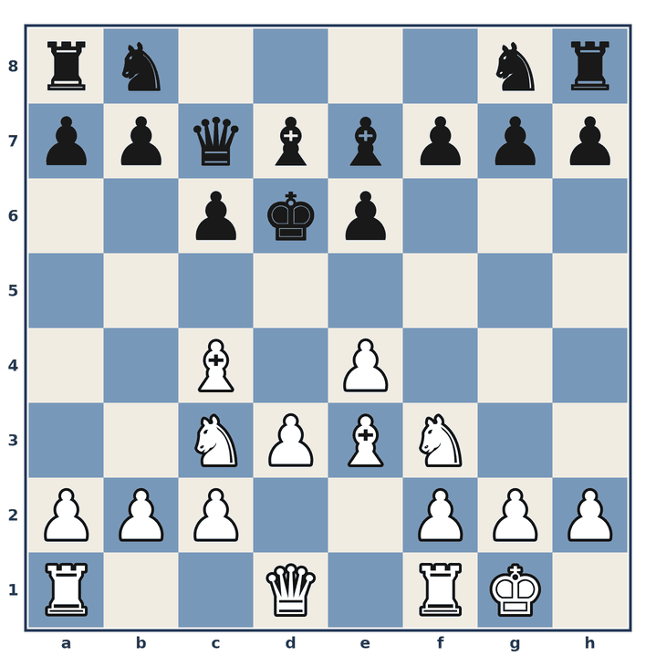
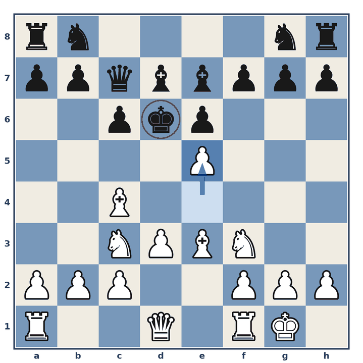

2-Permanent Advantage - Bad King Position
Steinitz's Advantages: 2-Permanent Advantage - Bad King Position · 22 January 2019
The bad king position for Black is obvious and can be exploited by White. White's plan will consist of a direct attack on the King.

Position before 1.
1. e5#
